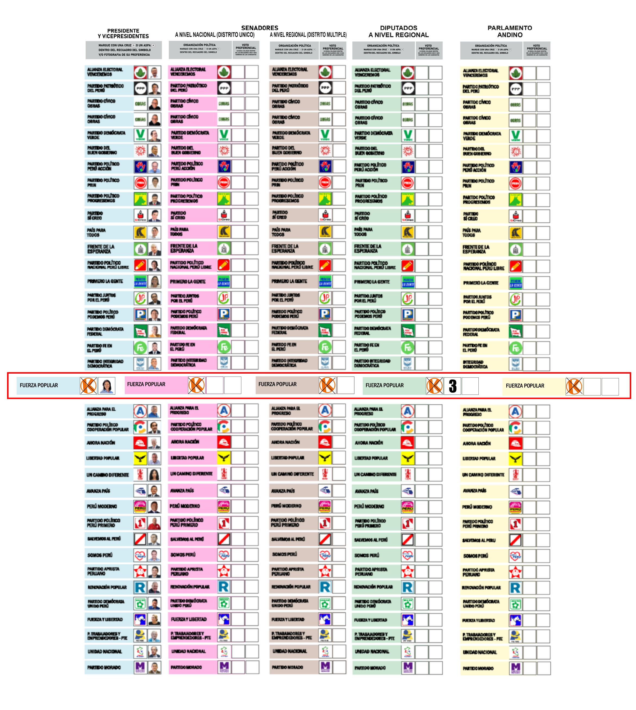

Ejemplo correcto
Esta es la manera correcta de marcar
Observa cómo se marca el símbolo y cómo se escribe el número 3 en la cédula. Después de este ejemplo, ya puedes comenzar a practicar en el simulador.

Ejemplo correcto
Observa cómo se marca el símbolo y cómo se escribe el número 3 en la cédula. Después de este ejemplo, ya puedes comenzar a practicar en el simulador.
